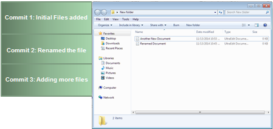
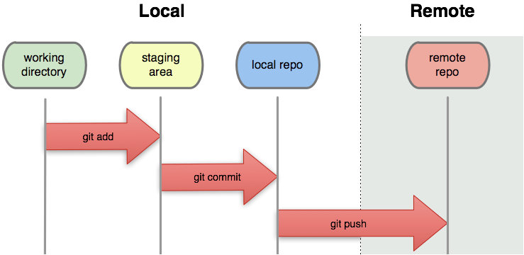

What is Version Control?

The secret sauce of how Github is able to keep your repository history are snapshots called Commits: Pictures of the state of your folder that you take and give names. When you finish making edits to the repo, you make a commit to save the current state.
Git is all about composing and saving snapshots of your project and then working with and comparing these snapshots. We send these snapshots up and down to copies of the repo (called clones) on the github server to host and share our work.
- Nothing that is committed to version control is ever lost. This means it can be used like the “undo” feature in an editor, and since all old versions of files are saved it’s always possible to go back in time to see exactly who wrote what on a particular day, or what version of a program was used to generate a particular set of results.
- It keeps a record of who made what changes when, so that if people have questions later on, they know who to ask.
- It’s hard (but not impossible) to accidentally overlook or overwrite someone’s changes: the version control system automatically notifies users whenever there’s a conflict between one person’s work and another’s.
Basic Version Control

1. Working Directory
This is the repository or folder that you are currently making your changes in. However, you need to directly tell git that you want to track certain files - otherwise, git won’t take snapshots of those changes.
2. Staging Area
The staging area contains all the tracked(added) files and information about what will go into your next commit. Think of this as the purgatory between snapshots. When you finally “Commit”, it saves the snapshot and your staging area will be clear.
3. Github Repository
You send and receive snapshots to and from the Github Server through pushing (to send your changes) and pulling (to pull changes from collaborators). By doing so, you are able to:
- Host your work publicly
- Keep file versions managed with multiple people
 Git Foundations
1.0
Git Foundations
1.0